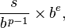

A quick and easy way to print a float in base-10.
The implementation of printf for the "%f" format specifier is quite involved. I invite you to take a look: printf_fp.c. That's hard.
But there is a hack, that you could use in cases where you don't need an exact number.
The format of a 32-bit floating point in modern systems is  where b = 2 ( ©Wikipedia ).
You could transform the base-2 exponent to base-10, take the integer part, and multiply the rest of the number with fractional part. This way you essentially get a base-10 number. I provide a draft implementation that you could use and improve.
#include <cstdio>
#include <cmath>
void print_fp( float number, int digits ) {
union {
float d;
int u;
};
d = number;
//deal with sign
bool minus = u >> 31;
u = u & ~(1 << 31);
//calculate base-10 exponent
double exp = (u >> 23) - 127;
double exp10 = exp / log2( 10.0 );
//adjust the number
u = (u & ~(0xFF << 23)) | (127 << 23);
double d2 = double(d) * pow( 10.0, exp10 - int(exp10) );
if( d2 >= 10.0 ) { d2 = d2 / 10.0; exp10+=1.0; }
if( d2 < 1.0 ) { d2 = d2 * 10.0; exp10-=1.0; }
//print sign
if( minus ) printf("-");
//print integer part
int i = int( d2 );
printf("%.1d.", i);
d2 = d2 - i;
//print fractional part
while( digits-- ) {
d2 = d2 * 10.0;
int i = int( d2 );
printf("%.1d", i);
d2 = d2 - i;
}
//print exponent part
printf("e%d\n", int(exp10));
}
int main() {
double d;
//the two doubles below are special, in that a float can't distinguish between them
//taken from Bruce Dawson post "Float Precision–From Zero to 100+ Digits"
d = 8.589973e9;
printf("%.10f\n", d);
print_fp( d , 10 );
d = 8.589974e9;
printf("%.10f\n", d);
print_fp( d , 10 );
}
Output:
8589973000.0000000000
8.5899735040e9
8589974000.0000000000
8.5899735040e9
Be warned that I haven't done error analysis. All calculations are done in double, so I expect this to work flawlessly for floats.
I'd like to thank Bruce Dawson for his outstanding series on floating points.